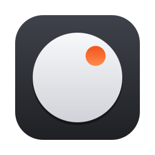

Set up Dial
A few steps, and you can talk to your computer.
-
The dial floats on your screen and never takes the focus from the app you're working in.
-
macOS asks for both when Dial opens. Turn Dial on in each list, and each one ticks itself here.
AccessibilitySo the dial can scroll, press keys and type for you.MicrophoneSo the dial can hear you, only while it's listening.Is Dial already on in the Accessibility list? That entry can belong to an older copy. Remove it with the − button, then add Dial again.
-
豆包 (Volcengine) turns what you say into text. Create an API key in its console, then paste it here.
-
Jev tells a command from dictation and understands more ways of saying things. Without it, a few plain rules in English and Chinese decide.
Using the dial
- 1The centreClick to listen. Click again, or pause, to stop. Drag it to move the dial.
- 2An app's iconClick to bring that app to the front.
- 3The ringDrag round to scroll the app in front. Clockwise scrolls down.
With the pointer over the dial
←→ switch apps↑↓ scrollSpace listenEsc cancel
Try saying
switch to Safariopen Slackscroll downgo to the topclose the window
Anything else is typed into the app in front.
Voice
豆包流式语音识别 (Volcengine) turns your voice into text. Your voice is sent to Volcengine only while the dial is listening.
Sign in with
From the new console.
From the old console.
Advanced
Words it mishears
The speech engine favors these. Your open apps' names are sent along automatically.
Commands
When you stop talking, the dial decides: run a command, or type your words. Jev (from TypeSafe) makes that call. Without a key, a few plain rules in English and Chinese decide instead.
Advanced
Try a sentence
Tried against a sample list of apps: Finder, Safari, Slack, Visual Studio Code and Terminal.
How sure Jev must be
Below this, the dial types your words instead of running a command.
Below this, the dial matches the app's name itself.
Ring
The ring shows your running apps, the ones you pick most first. It learns from every pick you make, on the dial or by voice.
What it has learned
The number is how many of an app's picks still count.
Theme
How the dial looks. It changes as you go, so keep it in view while you try these.
Make it big to tap it on a small screen, such as when you see this computer on your phone. It always fits on screen.
How much shows through the dial. You can still click and turn it.
Ring style
What the ring shows while you drag it. Drag the dial's ring to try each one.

Dial
Version . A virtual Surface Dial: talk to run commands or type, click to switch apps, turn to scroll.
Config file
Source codegithub.com/yangxin0/dial